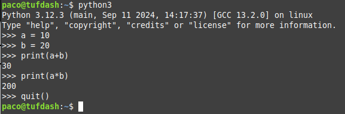

UD3. Introducció a Python
En aquest tema veurem una introducció al llenguatge de programació Python. Ara bé: com que més endavant es vorà el llenguatge Java, conforme anem veient coses de Python, anirem dient ja les diferències en Java. Estes diferències solen ser iguals en Java i C.
Característiques bàsiques de Python
Python és un llenguatge creat a finals dels 80 per Guido Van Rossum, i deu el seu nom a l'afició pel grup còmic britànic Monty Python.
És un llenguatge de programació interpretat, de tipificació dinàmica i multi plataforma. És de propòsit general, fins i tot per a la creació de scripts.
Què necessitem per a programar en Python?
Ho podem fer de diverses maneres:
-
Usar un intèrpret online (no cal instal·lar res)
Per exemple, onlinegdb.com. Caldrà seleccionar el llenguatge Python 3, escriure el codi i polsar Run.
-
Instal·lar l'intèrpret de Python: www.python.org/downloads
Una vegada instal·lat (Linux ja el porta) podrem:
- Provar comandaments en mode interactiu: en el terminal escriurem python3. Entrarem en el mode interactiu: després de fer intro en cada instrucció, s'executarà.
 -
Escriure el programa en un fitxer de text: Li direm, per exemple, holaMon.py, i l'executarem amb: python3 holaMon.py. No cal compilar res, perquè Python és interpretat.
-
Usar un IDE (Entorn de Desenvolupament Integrat): Per exemple, Visual Studio Code. Potser calga instal·lar l'extensió de Python. Escriurem el nostre programa, el guardarem (holaMon.py) i l'execurarem amb la icona del triangle.
Estructura d'un programa en Python
Un programa en Python té una estructura molt simple:
- No s'ha de posar punt i coma després de cada instrucció.
- No es posen delimitadors de bloc de programa. Simplement se sangra.
- No cal indicar el tipus de dades de les variables.
Qualsevol programa escrit en Pyhton té la següent estructura:
Veiem que l'única part (pràcticament) necessària en un programa és l'entrada, processament i la sortida de dades, com en qualsevol llenguatge de programació.
En Python estos apartats poden variar de posició.
Veiem uns exemples i els analitzem.
L'exemple més simple, mostrar un missatge per pantalla:
| Python | |
|---|---|
Un altre exemple més complet:
- Descripció del programa
- Importació de llibreries
- Definició de funcions
- Entrada de dades
- Processament de dades
- Sortida de dades
Exemple
Copia i apega el codi anterior en l'IDE que tingues de Python i executa'l per vore què fa.
Comentem, per adamunt, algunes coses del programa que més endavant ampliarem:
- Descipció del programa. Son comentaris, no s'executen.
- A l'import indiquem que necessitem una llibreria: conjunt de funcions que ja estan implementades i les podem fer servir als nostres programes. En este exemple la llibreria és time i ens cal per a usar la funció time.sleep() que fa que el prgrama pare en eixe punt uns segons (2 en este cas).
- Desprès tenim la definició d'una funció, que comença amb la paraula reservada def. Tot el que es pose dins del bloc de la definició d'una funció ha d'anar sagnat (en este cas és només la instrucció return).
- Després ja tenim el nostre programa pròpiament dit, on veiem que:
- Les línies no tenen cap sagnat (van just a l'esquerra)
- Amb els input aconseguim que s'introduisquen dades per teclat.
- Es fa la crida a la funció que hem definit abans (areaRectangle).
- Finalment mostrem a l'usuari el resultat (print).
Noms de variable i funcions en Python
Abans hem vist que hem posat noms de variable i funcions. Estos noms han de tindre unes regles, que solen ser les mateixes en tots els llenguatges, encara que poden variar un poc. En Python estes són les regles per als noms de variables i funcions:
Regles per a noms de variables i funcions en Python
- Son una combinació de lletres minúscules [ a...z ], majúscules [ A...Z ], dígiint [ 0...9 ] i el caràcter subratllat [ _ ].
- Poden tindre qualsevol longitud.
- S'admeten els accents, la ç i la ñ.
- No poden haver símbols especials ni operadors:
[, !, @, #, $, %, *, ... - No poden començar amb dígit.
- No poden ser paraules reservades:
Variables
Les variables són els llocs on es guarda la informació (per exemple, els llocs on es guarda cada dada introduïda per teclat).
Es poden classificar en globals i locals:
- Variables globals: es creen fora de qualsevol funció. Es pot accedir a elles des de qualsevol part del programa.
- Variables locals: es creen dins d'una funció. Es pot accedir a elles només des d'eixa funció.
Més endavant vorem els tipus de dades (enter, caràcter, etc) de les variables.
Comentaris
En algunes parts del programa cal que el programador pose anotacions per a:
- Recordar el que ha fet, per a futures modificacions.
- Indicar a altres programadors com s'ha fet alguna cosa.
- indicar la data (o autor, etc.) de creació del programa.
Tipus de comentaris:
- D'una línia:
- Precedit per coixinet: # soc un comentari
- Entre cometes simples: 'soc un comentari'
- Entre cometes dobles: "soc un comentari"
- De diverses línies:
- entre trios de cometes simples: ' ' '
- entre trios de cometes dobles: " " "
- De documentació de funcions: si posem un comentari entre cometes en la primera línia dins d'una funció (per a explicar què fa) després podrem accedir a eixe comentari des d'altres parts del programa. Ara ho veurem.
Veiem en este programa exemples dels diferents tipus de comentaris:
Ens alguns IDE com el Visual Studio Code, si poses el cursor damunt del nom d'una funció et mostra els comentaris que has posat en ella:
Delimitacions
Son símbols especials que permeten al compilador reconéixer les diferents parts del programa.
El més important és el finalitzador de sentències, que, en molts llenguatges de programació (com C i Java) és el pun i coma ( ; ) però Python fa servir simplement el bot de línia.
Ací tenim els delimitadors que s'usen en Python.
| Python | C i Java | Nom | Utilitat |
|---|---|---|---|
| Salt de línia | ; | Finalitzador | - Finalitzar una instrucció simple o una declaració de variables |
| Tabulació | { } | Bloc | - Delimitar inici i fi d'un bloc de codi |
| , | , | Separador | - Separar els elements d'una llista |
| ( ) | ( ) | Parèntesi | - Agrupar operacions - Paràmetres de funcioins |
| [ ] | [ ] | Claudàtors | - Per a vectors, llistes... |
Tipus de dades
Les dades que manegen els programes són de distints tipus: lletres, números sense decimals, amb decimals...
Per tant, les variables seran d'un tipus determinat. En la majoria de llenguatges de programació, abans d'utilitzar una nova variable, cal definir-la (declarar-la): indicar de quin tipus és. Però en Python no cal. Simplement el tipus de la variable serà del mateix tipus que el valor que li s'assigne.
Veiem els distints tipus que solen tindre els llenguatges de programació.
Tipus elementals
En Python hi ha 4 tipus bàsics: enter, amb decimals, cadena i lògic.
Altres llenguatges, com C i Java, en tenen més, per a indicar enters xicotets o grans, amb signa o sense... Igual que per a números amb decimals.
Números enters: int
Números enters (sense decimals).
Quan posem un número s'interpreta que està en sistema de numeració decimal. Però podem dir-li que ho interprete com a binari, octal o hexadecimal:
| Python | |
|---|---|
El print mostra el número en sistema decimal.
Números amb decimals: float
Números amb decimals
| Python | |
|---|---|
Lègics: bool
Serveix per si una variable volem que tinga 2 únics estats (vertader o fols). Els únics valors que pot tindre una variable d'este tipus són True o False.
Ens servirà per a quan usem sentències condicionals (ja entrarem en detall):
NOTA
En C++ i Java és true i false (en minúscula). C no té eixe tipus de dades com a tal (usa el 0 per a false i l'1 per a true).
Cadenes: str
És el tipus de dades per a guardar una cadena de caràcters (un nom de persona, per exemple). Una dada de tipus str és una successió de 0 o més caràcters dins de cometes simples o dobles (encara que es recomana entre cometes dobles, ja que molts llenguatges només admeten les dobles).
Per a guardar cadenes els llenguatges utilitzen formes distintes:
- En C no és un tipus sinó un vector de caràcters (ja vorem els vectors).
- En Java no és un tipus, sinó una classe (ja vorem les classes).
- En Python sí que és un tipus de dades.
Seqüències d'escapament
Per a poder posar unes cometes dobles dis d'una cadena amb cometes dobles es pot usar el caràcter d'escapament \. També per a cometes simples:
| Python | |
|---|---|
En una cadena de text també podem utilitzar este caràcter d'escapament per a representar diverses accions:
| Python, C i Java | Acció | Exemple | Resultat |
|---|---|---|---|
| \n | Nova línia | print("Hola\nAdéu") | |
| \t | Tabulador | print("Hola\tAdéu") | Hola Adèu |
| \r | Retorn de carro | print("Hola\rTu") | Tula |
| \b | Backspace | print("Hola\bAdéu") | HolAdéu |
Encara que les més emprades són \n i \t.
Totes estes seqüències d'escapament també es poden usar en C i Java.
Tipus composts
Els tipus simples (que acabem de veure) serveixen quan hem de guardar una informació simple. És a dir, formada per una sola dada (una temperaura, un nom, una edat...)
Però si volem guardar en una variable el domicili d'un client (format per un carrer, número, codi postal...) o una data (dia, mes any), el programador haurà de definir un tipus de dades compost. Estos tipus de dades compostos els vorem més endavant.
Declaració de variables
Una variable és una porció de memòria (RAM), representada per un nom (identificador) on es guardarà un valor que pot variar al llarg de l'execució d'un programa.
Declarar una variable vol dir indicar de quin tipus serà eixa variable. Depenent del llenguatge de programació caldrà declarar les variables o no. Per tant, atenent a este criteri, tenim 2 tipus de llenguatges de programació:
Llenguatges de tipificació estàtica (C, Java... però no Python)
Estos llenguatges obliguen a indicar de quin tipus serà una variable abans d'usar-la. Després, al moment de fer servir les variables, el llenguatge controla que el valor que s'assigne a una variable corresponga al tipus de la variable. Si no és el cas, donarà error-
| Java | |
|---|---|
Llenguatges de tipificació dinàmica (Python, PHP...)
En estos llenguatges no es declara la variable prèviament. Simplement quan se li assigna un valor, la variable agafa el tipus d'eixe valor. I pot variar de tipus cada vegada que se li assigna un nou valor.
Com veiem a l'exemple, no tindrem les situacions d'error dels llenguatges de tipificació estàtica (ja que no s'ha de declarar la variable i poden canviar de tipus). Però pot ser un desavantatge ja que podria ser que volguérem que en fer la divisió de 11/4 volguérem guardar la part entera (2) i no 2.75. Ens pot portar a situacions inesperades o inconsistents. Caldrà anar en compte en estos casos.
NOTA
Si en algun moment parlem de "declarar" una variable en Python, ens estarem referint al primer moment del programa on li s'assigna un valor a eixa variable.
Àmbit i visibilitat
NOTA
Aquestos conceptes s'explicaran en detall quan veiem la programació modular (funcions). No obstant, veiem un avanç.
Les variables poden "declarar-se" (començar a usar-se) en qualsevol part del programa, però segons el lloc on siguen declarades, les podrem fer servir només en alguna part (variables locals) o bé en tot el programa (variables globals).
Exemple 1
La variable a és local a la funció "funcioneta"
| Python | |
|---|---|
Si una variable està declarada dins d'una funció, només podem accedir a ella dins d'eixa funció.
Exemple 2
Si una variable "delarada" (primer ús) fora de les funcions, podrem accedir a ella des de qualsevol lloc del programa (bé, sempre després de ser declarada). Però ja vorem que no convé declarar variables globals.
L'àmbit i visibilitat d'una variable són conceptes íntimament relacionats. Fan referència a des d'on es pot accedir a una variable:
- La visibilitat és la propietat que indica si es pot accedir o no a una variable en un punt determinat del programa.
- En l'exemple 1:
- Dins de la funció "funcioneta" sí que hi ha visibilitat de 'a'.
- Fora de la funció "funcioneta" no hi ha visibilitat de 'a'.
- En l'exemple 2:
- En tot el programa sí que hi ha visibilitat de 'a'.
- En l'exemple 1:
- L'àmbit és la zona del programa on és visible una variable.
- En l'exemple 1, l'àmbit de 'a' és dins de la funció "funcioneta"
- En l'exemple 2, l'àmbit de 'a' és a tot el programa.
En C i Java, a més de definir variables locals a una funció es poden definir locals a un bloc de codi, tancat entre claus { }. En eixe cas, eixes variables només poden ser accedides dins d'eixe bloc de codi.
En Python un bloc seria el trós de codi (seguit) amb el mateix sagnat (o subsagnat). Però si una variable es declara en eixe bloc, en Python sí que podem accedir des d'altres blocs, encara que no és recomanable:
- El primer ús de "major" es fa en este bloc
- Però Python em permet usar-la fora del bloc
En canvi, és recomanable declarar la variable en el "bloc de fora":
- Declarem la variable en el "bloc de fora"
- ... ja que vaig a usar-la en eixe bloc